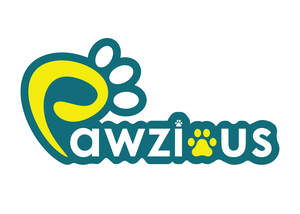

Trade Mark Journal No.2025/030 25 July 2025
UK00004235139 17 July 2025 (5,31)

- Class 5
- Multivitamins; Vitamins for pets; Vitamin and mineral supplements for pets; Dietary pet supplements in the form of pet treats; Vitamin supplements for animals; Antibiotic food supplements for animals; Vitamins for animals; Dietary supplements for pets; Repellents for dogs; Dogs (Repellents for -); Vitamin and mineral food supplements; Medicated food supplements; Protein supplements for animals; Medicated supplements for animal feedstuffs; Vitamin supplements; Dietary supplements for pets in the nature of a powdered drink mix; Calcium tablets as a food supplement; Dietary supplements for animals; Mineral dietary supplements for animals; Dietary supplements for humans; Probiotic supplements; Mineral dietary supplements for humans; Medicated supplements for foodstuffs for animals; Food supplements; Medicated shampoos for pets; Dog lotions for veterinary purposes; Liquid vitamin supplements; Vitamin and mineral supplements; Gummy vitamins; Dog washes [insecticides]; Calcium supplements; Vitamin supplements for use in renal dialysis; Anti-oxidant food supplements; Dietary supplements for infants; Flaxseed dietary supplements; Food supplements for sportsmen; Food supplements for veterinary use; Dietary supplements consisting of vitamins; Vitamin preparations in the nature of food supplements; Mineral supplements for feeding livestock; Anti-flea collars for pets; Dietary food supplements; Medicated additives for animal foods; Attractants for pet animals; Cat repellents; Zinc dietary supplements; Flaxseed oil dietary supplements; Health-aid foods supplements containing ginseng; Diet capsules; Protein supplements; Acai powder dietary supplements; Prenatal vitamins; Chlorella dietary supplements; Liquid nutritional supplements; Homeopathic supplements; Health food supplements made principally of vitamins; Protein dietary supplements; Nutritional supplements; Liquid dietary supplements; Propolis dietary supplements; Health-aid foods supplement containing red ginseng; Protein powder dietary supplements; Herbal supplements; Multivitamin preparations; Soy protein dietary supplements; Nutritional supplements for veterinary use; Vitamins and vitamin preparations; Vitamin tablets; Deodorizers for litter trays; Deodorisers for litter trays.
- Class 31
- Dog foods; Pet food for dogs; Dog food; Dogs; Dog biscuits; Biscuits (Dog -); Food for dogs; Foodstuff for dogs; Edible chews for dogs; Foods flavoured with liver for feeding dogs; Pet foods; Bones for dogs; Foods flavoured with chicken for feeding dogs; Chewing bones for dogs; Pet foods in the form of chews; Foods containing chicken for feeding dogs; Foods containing liver for feeding dogs; Litter for dogs; Canned foods for dogs; Digestible chewing bones for dogs; Biscuits for dogs; Dog treats [edible]; Edible dog treats; Foods flavoured with beef for feeding dogs; Beverages for dogs; Foodstuffs for dogs; Pet rabbit food; Milk for use as foodstuffs for dogs; Foods containing beef for feeding dogs; Foods in the form of rings for feeding to dogs; Food for racing dogs; Pet food; Food (Pet -); Cat food; Foods flavoured with liver for feeding cats; Foods flavoured with chicken for feeding cats; Foods containing chicken for feeding cats; Food preparations for dogs; Canned foodstuffs for dogs; Foods flavoured with beef for feeding cats; Animal litter for cats; Foods containing liver for feeding cats; Pet food for birds; Pet beverages; Pet animals; Food for cats; Pet foodstuffs; Cat biscuits; Foodstuffs for pet animals; Foods containing beef for feeding cats; Cat treats [edible]; Edible pet treats; Pet treats in the nature of bully sticks; Edible horse treats; Edible treats for animals; Edible bird treats; Biscuits for puppies; Animal biscuits; Savory biscuits for animals; Biscuits for animals; Edible silvervine powder for pet cats; Edible chews for animals; Chews for animals (Edible -); Animals (Edible chews for -); Bark for use as animal litter; Cat litter; Cat litter and litter for small animals; Cheese flavoured foodstuffs for dogs; Beverages for cats; Beverages for canines; Pet birds; Cats; Cat litters; Litter for cats; Foodstuffs for cats; Kitty litter; Canned foodstuffs for cats; Foods in the form of rings for feeding to cats; Food preparations for cats; Flaxseed meal for animal consumption; Powdered milk for kittens; Flaxseed for animal consumption; Animal litter; Peanut cake for animals; Cake (Peanut -) for animals; Abrasive liners for cat litter pans; Litter for animals; Litter for birds; Woodshavings for use as animal litter; Small animal litter; Pets (Aromatic sand for -) [litter]; Aromatic sand for pets [litter]; Aromatic sand [litter] for pets; Litter for domestic animals; Bedding and litter for animals; Peat litter for animals; Sanded paper for pets [litter]; Pets (Sanded paper for -) [litter]; Sanded paper [litter] for pets; Litter for small animals; Straw litter; Wood shavings for use as animal litter; Litter peat; Peat (Litter -); Sanded paper for domestic animals (litter); Bark-based products for use as animal litter; Fuller's earth for use as animal litter; Sand for pet toilets.
Blue Froth Ltd